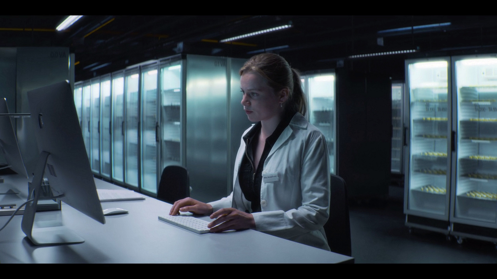
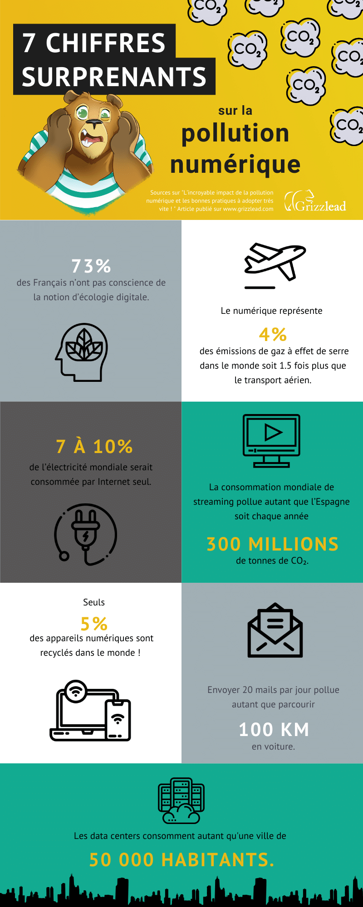

Dans un des épisodes de BioHackers, on apprend que les échantillons ADN des sujets sont gardés plusieurs années après les différentes expériences, sous forme physique mais également sous forme informatique.
Toutes ces informations sont stockées dans les data center de l’institut. Mais saviez-vous que les data center polluent ? Stocker des données demande beaucoup d’énergie et émet beaucoup de gaz à effet de serre, responsables du changement climatique. C’est ce que l’on appelle pollution numérique. En général, le secteur numérique a besoin de beaucoup d’énergie pour fonctionner, il consomme des ressources naturelles non renouvelables.
D’après une étude de GreenIT publiée en juin 2020 sur les impacts environne- mentaux du numérique en France, à l’échelle de la France la consommation d’énergie primaire représente 180 TWh d’énergie primaire, le réchauffement global équivaut à 24 millions de tonnes de gaz à effet de serre, la tension d’eau douce est cinq fois supérieure à la consommation d’eau des parisiens soit 559 m3 d’eau douce. Et enfin l’épuisement des ressources abiotiques représente 883 tonnes équivalant antimoine. A l’échelle individuelle, la consommation d’énergie primaire représente 31 000 kWh d’énergie primaire, les gaz à effet de serre est égal à 420 kg, l’eau correspond à 97 000 litres d’eau douce et enfin les ressources abiotiques représente 14 grammes équivalant antimoine.
Voici un petit résumé de Grizzlead:
Mais alors comment réduire cette pollution, quelle sont les bonnes attitudes à suivre ? Retrouver les dans l’article «Les solutions au problème».